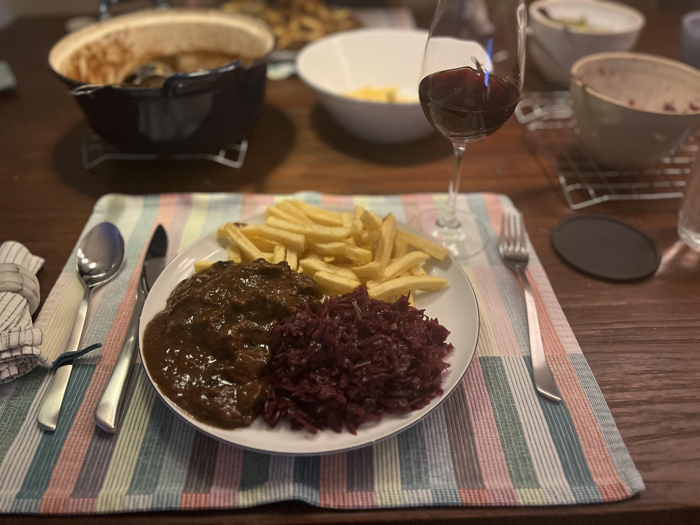

Oma's Stoofvlees
Diner
4 personen
30 min + 6 uur
Dit is een nog erg primitieve versie van de website.
uiteindelijk komt er een functie om te sorteren wat voor gerecht je wilt. Denk hierbij aan sorteren op ontbijt, lunch of diner, sorteren op voorgerecht, hoofdgerecht of dessert, maar ook sorteren op seizoen.
Voor nu is de website bruikbaar, maar niet erg goed.
Diner
4 personen
30 min + 6 uur